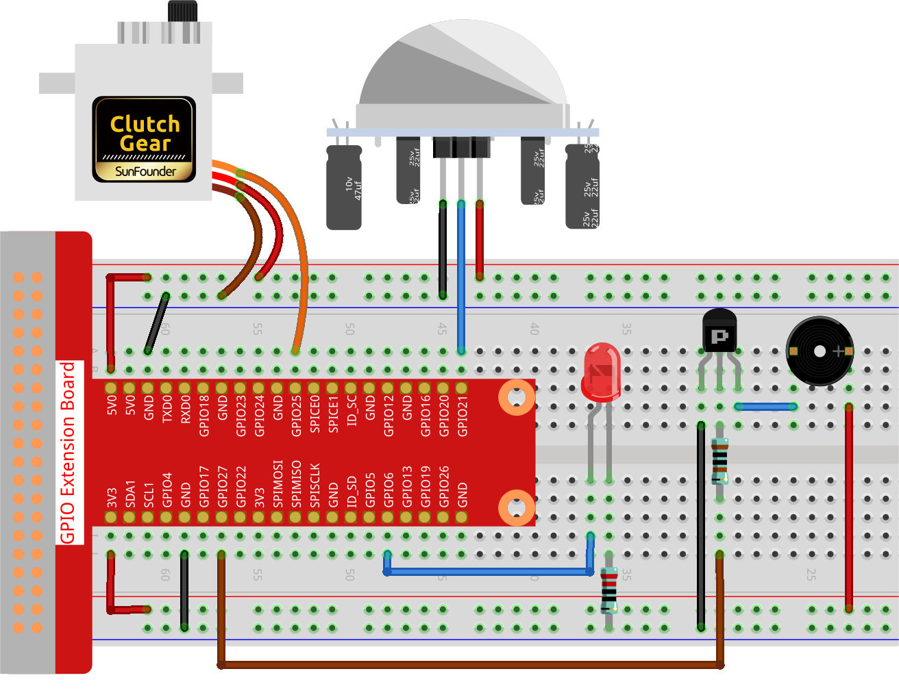

Bemerkung
Hallo und willkommen in der SunFounder Raspberry Pi & Arduino & ESP32 Enthusiasten-Gemeinschaft auf Facebook! Tauchen Sie tiefer ein in die Welt von Raspberry Pi, Arduino und ESP32 mit anderen Enthusiasten.
Warum beitreten?
Expertenunterstützung: Lösen Sie Nachverkaufsprobleme und technische Herausforderungen mit Hilfe unserer Gemeinschaft und unseres Teams.
Lernen & Teilen: Tauschen Sie Tipps und Anleitungen aus, um Ihre Fähigkeiten zu verbessern.
Exklusive Vorschauen: Erhalten Sie frühzeitigen Zugang zu neuen Produktankündigungen und exklusiven Einblicken.
Spezialrabatte: Genießen Sie exklusive Rabatte auf unsere neuesten Produkte.
Festliche Aktionen und Gewinnspiele: Nehmen Sie an Gewinnspielen und Feiertagsaktionen teil.
👉 Sind Sie bereit, mit uns zu erkunden und zu erschaffen? Klicken Sie auf [hier] und treten Sie heute bei!
3.1.2 Willkommen
Einführung
In diesem Projekt werden wir PIR-Sensoren verwenden, um die Bewegung von Fußgängern zu erfassen. Dabei setzen wir Servomotoren, LEDs und einen Summer ein, um die Funktion der Sensortür eines Convenience-Stores zu simulieren. Erscheint ein Fußgänger im Erfassungsbereich des PIR-Sensors, wird das Anzeigelicht aktiviert, die Tür öffnet sich und der Summer spielt die Eingangsglocke.
Benötigte Komponenten
Für dieses Projekt benötigen wir folgende Komponenten.

Schaltplan
T-Board Name |
physisch |
wiringPi |
BCM |
GPIO18 |
Pin 12 |
1 |
18 |
GPIO17 |
Pin 11 |
0 |
17 |
GPIO27 |
Pin 13 |
2 |
27 |
GPIO22 |
Pin 15 |
3 |
22 |
Experimentelle Verfahren
Schritt 1: Bauen Sie den Schaltkreis.
Schritt 2: Wechseln Sie das Verzeichnis.
cd ~/davinci-kit-for-raspberry-pi/python-pi5
Schritt 3: Ausführen.
sudo python3 3.1.2_Welcome_zero.py
Nachdem der Code ausgeführt wurde, öffnet sich automatisch die Tür (simuliert durch den Servo), das Anzeigelicht schaltet sich ein und die Türklingelmusik wird abgespielt, wenn der PIR-Sensor jemanden erfasst. Nachdem die Türklingelmusik abgespielt wurde, schließt das System automatisch die Tür und schaltet das Anzeigelicht aus, um auf das nächste Vorbeigehen zu warten.
Am PIR-Modul befinden sich zwei Potentiometer: eines zur Einstellung der Empfindlichkeit und das andere zur Einstellung der Erfassungsentfernung. Um das PIR-Modul optimal zu nutzen, sollten Sie beide gegen den Uhrzeigersinn bis zum Anschlag drehen.

Warnung
Wenn die Fehlermeldung RuntimeError: Cannot determine SOC peripheral base address angezeigt wird, lesen Sie bitte Wenn gpiozero nicht funktioniert.
Code
Bemerkung
Sie können den untenstehenden Code modifizieren/zurücksetzen/kopieren/ausführen/stoppen. Bevor Sie dies tun, sollten Sie jedoch zum Quellcodepfad wie raphael-kit/python-pi5 wechseln. Nachdem Sie den Code geändert haben, können Sie ihn direkt ausführen, um das Ergebnis zu sehen.
#!/usr/bin/env python3
from gpiozero import LED, MotionSensor, Servo, TonalBuzzer
import time
# GPIO-Pin-Setup für LED, Bewegungssensor (PIR) und Summer
ledPin = LED(6)
pirPin = MotionSensor(21)
buzPin = TonalBuzzer(27)
# Servomotor-Pulsbreitenkorrekturfaktor und -berechnung
myCorrection = 0.45
maxPW = (2.0 + myCorrection) / 1000 # Maximale Pulsbreite
minPW = (1.0 - myCorrection) / 1000 # Minimale Pulsbreite
# Initialisierung des Servos mit angepassten Pulsbreiten
servoPin = Servo(25, min_pulse_width=minPW, max_pulse_width=maxPW)
# Musikalische Melodie für den Summer, mit Noten und Dauern
tune = [('C#4', 0.2), ('D4', 0.2), (None, 0.2),
('Eb4', 0.2), ('E4', 0.2), (None, 0.6),
('F#4', 0.2), ('G4', 0.2), (None, 0.6),
('Eb4', 0.2), ('E4', 0.2), (None, 0.2),
('F#4', 0.2), ('G4', 0.2), (None, 0.2),
('C4', 0.2), ('B4', 0.2), (None, 0.2),
('F#4', 0.2), ('G4', 0.2), (None, 0.2),
('B4', 0.2), ('Bb4', 0.5), (None, 0.6),
('A4', 0.2), ('G4', 0.2), ('E4', 0.2),
('D4', 0.2), ('E4', 0.2)]
def setAngle(angle):
"""
Bewegt den Servo auf einen bestimmten Winkel.
:param angle: Winkel in Grad (0-180).
"""
value = float(angle / 180) # Winkel in Servo-Wert umrechnen
servoPin.value = value # Servoposition setzen
time.sleep(0.001) # Kurze Verzögerung für Servobewegung
def doorbell():
"""
Spielt eine musikalische Melodie mit dem Summer.
"""
for note, duration in tune:
buzPin.play(note) # Note abspielen
time.sleep(float(duration)) # Dauer der Note
buzPin.stop() # Summer nach dem Spielen der Melodie anhalten
def closedoor():
# LED ausschalten und Servo bewegen, um Tür zu schließen
ledPin.off()
for i in range(180, -1, -1):
setAngle(i) # Servo von 180 auf 0 Grad bewegen
time.sleep(0.001) # Kurze Verzögerung für gleichmäßige Bewegung
time.sleep(1) # Warten nach dem Schließen der Tür
def opendoor():
# LED einschalten, Tür öffnen (Servo bewegen), Melodie abspielen, Tür schließen
ledPin.on()
for i in range(0, 181):
setAngle(i) # Servo von 0 auf 180 Grad bewegen
time.sleep(0.001) # Kurze Verzögerung für gleichmäßige Bewegung
time.sleep(1) # Warten vor dem Spielen der Melodie
doorbell() # Türklingelmelodie abspielen
closedoor() # Tür nach der Melodie schließen
def loop():
# Hauptschleife zur Bewegungserkennung und Türbedienung
while True:
if pirPin.motion_detected:
opendoor() # Tür öffnen, wenn Bewegung erkannt wird
time.sleep(0.1) # Kurze Verzögerung in der Schleife
try:
loop()
except KeyboardInterrupt:
# GPIO bei Benutzerunterbrechung aufräumen (z. B. Strg+C)
buzPin.stop()
ledPin.off()
Code-Erklärung
Das Skript beginnt mit dem Import der notwendigen Module. Die Bibliothek
gpiozerowird verwendet, um mit der LED, dem Bewegungssensor, dem Servomotor und dem tonalen Summer zu interagieren. Das Modultimewird für zeitbezogene Funktionen eingesetzt.#!/usr/bin/env python3 from gpiozero import LED, MotionSensor, Servo, TonalBuzzer import time
Initialisiert die LED, den PIR-Bewegungssensor und den tonalen Summer an ihren jeweiligen GPIO-Pins.
# GPIO-Pin-Setup für LED, Bewegungssensor (PIR) und Summer ledPin = LED(6) pirPin = MotionSensor(21) buzPin = TonalBuzzer(27)
Berechnet die maximalen und minimalen Pulsbreiten für den Servomotor unter Berücksichtigung eines Korrekturfaktors zur Feinabstimmung.
# Servomotor-Pulsbreitenkorrekturfaktor und -berechnung myCorrection = 0.45 maxPW = (2.0 + myCorrection) / 1000 # Maximale Pulsbreite minPW = (1.0 - myCorrection) / 1000 # Minimale Pulsbreite
Initialisiert den Servomotor am GPIO-Pin 25 mit den angepassten Pulsbreiten für eine genaue Positionierung.
# Initialisierung des Servos mit angepassten Pulsbreiten servoPin = Servo(25, min_pulse_width=minPW, max_pulse_width=maxPW)
Die Melodie wird als Abfolge von Noten (Frequenz) und Dauern (Sekunden) definiert.
# Musikalische Melodie für den Summer, mit Noten und Dauern tune = [('C#4', 0.2), ('D4', 0.2), (None, 0.2), ('Eb4', 0.2), ('E4', 0.2), (None, 0.6), ('F#4', 0.2), ('G4', 0.2), (None, 0.6), ('Eb4', 0.2), ('E4', 0.2), (None, 0.2), ('F#4', 0.2), ('G4', 0.2), (None, 0.2), ('C4', 0.2), ('B4', 0.2), (None, 0.2), ('F#4', 0.2), ('G4', 0.2), (None, 0.2), ('B4', 0.2), ('Bb4', 0.5), (None, 0.6), ('A4', 0.2), ('G4', 0.2), ('E4', 0.2), ('D4', 0.2), ('E4', 0.2)]
Funktion zum Bewegen des Servos auf einen bestimmten Winkel. Wandelt den Winkel in einen Wert zwischen 0 und 1 für den Servo um.
def setAngle(angle): """ Bewegt den Servo auf einen bestimmten Winkel. :param angle: Winkel in Grad (0-180). """ value = float(angle / 180) # Winkel in Servo-Wert umrechnen servoPin.value = value # Servoposition setzen time.sleep(0.001) # Kurze Verzögerung für Servobewegung
Funktion zum Abspielen einer musikalischen Melodie mit dem Summer. Durchläuft die Liste
tuneund spielt jede Note für ihre angegebene Dauer ab.def doorbell(): """ Spielt eine musikalische Melodie mit dem Summer. """ for note, duration in tune: buzPin.play(note) # Note abspielen time.sleep(float(duration)) # Dauer der Note buzPin.stop() # Summer nach dem Spielen der Melodie anhalten
Funktionen zum Öffnen und Schließen der Tür mit dem Servomotor. Die Funktion
opendoorschaltet die LED ein, öffnet die Tür, spielt die Melodie und schließt dann die Tür.def closedoor(): # LED ausschalten und Servo bewegen, um Tür zu schließen ledPin.off() for i in range(180, -1, -1): setAngle(i) # Servo von 180 auf 0 Grad bewegen time.sleep(0.001) # Kurze Verzögerung für gleichmäßige Bewegung time.sleep(1) # Warten nach dem Schließen der Tür def opendoor(): # LED einschalten, Tür öffnen (Servo bewegen), Melodie abspielen, Tür schließen ledPin.on() for i in range(0, 181): setAngle(i) # Servo von 0 auf 180 Grad bewegen time.sleep(0.001) # Kurze Verzögerung für gleichmäßige Bewegung time.sleep(1) # Warten vor dem Spielen der Melodie doorbell() # Türklingelmelodie abspielen closedoor() # Tür nach der Melodie schließen
Hauptschleife, die ständig auf Bewegungserkennung prüft. Bei erkannter Bewegung wird die Funktion
opendoorausgelöst.def loop(): # Hauptschleife zur Bewegungserkennung und Türbedienung while True: if pirPin.motion_detected: opendoor() # Tür öffnen, wenn Bewegung erkannt wird time.sleep(0.1) # Kurze Verzögerung in der Schleife
Führt die Hauptschleife aus und stellt sicher, dass das Skript mit einem Tastaturbefehl (Strg+C) gestoppt werden kann, wobei der Summer und die LED für einen sauberen Ausstieg ausgeschaltet werden.
try: loop() except KeyboardInterrupt: # GPIO bei Benutzerunterbrechung aufräumen (z. B. Strg+C) buzPin.stop() ledPin.off()